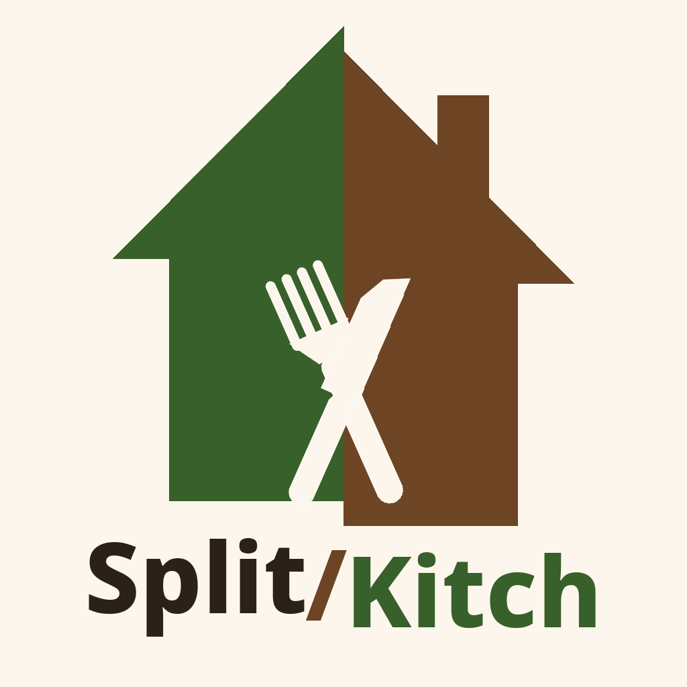

Local food sharing
Dinner, made by a neighbor.
SplitKitch is where ordinary people list home-cooked food for sale nearby, in the moment it exists. Someone made too much, someone is doing a drop, someone cooked a dish too big for one. You see it, you claim it, you pick it up.
Hungry
-
See what's cooking
Fresh posts near you, right now. -
Claim a plate
Reserve yours before it is gone. -
Meet up
Pick it up in person, nearby.
Cooking
-
Snap a photo
One picture is the whole listing. -
Set a price
You name it. We write the listing. -
Hand it off
They come to you. Dinner is done.
3 stops, then eat.
How it works
If you are hungry
Open the feed and see what neighbors are cooking near you right now. No searching, no typing, just what is actually available around you. Claim a plate, get a simple confirmation, and meet up for pickup. Browsing is open to everyone. You only need an account when you claim food or meet up.
If you cook
Made too much? Post it. Cooking on purpose? Schedule a drop. Making a dish too big for one? Split the batch with claimants. Listing takes a photo and a price, and SplitKitch writes the rest. When the food is gone, the post is gone.
Gone when it is gone
SplitKitch is built like a moment, not a storefront. Posts are ephemeral: they appear when the food exists and disappear when it is claimed. No permanent menus, no stale listings, no scrolling through restaurants pretending to be neighbors.
SplitBatch
Some dishes only make sense in a big batch. SplitBatch lets a cook post one large cook, a tray of lumpia, a pot of pozole, a whole brisket, and lets neighbors claim portions until the batch is fully split. Cook once, feed the block.
Free plates, too
Some neighbors cook for the block and charge nothing. Those posts live in the same feed with a green FREE badge, under Community Kitchen, and claiming one works exactly like claiming dinner, just without the paying part. And if you need food help beyond the app, the Food help page lists the food banks, community kitchens, and support in each area we open. No account needed to read it.
For cooks
Your kitchen, your food, your price. SplitKitch handles the listing, the matching, and the pickup confirmation. Buyers and sellers pay each other directly, so the platform never takes or holds the food money, and never takes a cut of your food.
Post in seconds
Snap a photo, set a price. That is the whole form. The listing, the description, and the details are written for you.
Post with a permit on file
To publish food, a cook keeps permit credentials on file with SplitKitch: the permit type, the permit number, and the issuing county or agency. Scrolling, following, and buying stay open to everyone. Posting asks for the paperwork first.
Trust, stated plainly
Permit info, labeled honestly
Every cook's permit details appear on their profile and listings with a standing label:
Self-reported by the seller, not verified by the platform, listed for convenience only.
Next to each permit is a link to the issuing county's own verification site, so anyone can check the permit with the county directly. The county does the checking, not us.
Money stays between people
SplitKitch never takes or holds food money. Buyers and sellers pay each other directly, the way neighbors already do. Your home address is never published on a listing, and pickup is arranged between the two people involved.
Starting in Folsom and Sacramento
SplitKitch opens in a few neighborhoods first, where the food laws and the cooks line up, and grows area by area from there. The apps are on the way. If you want to know when SplitKitch reaches your block, send us a note.

Apps on the way